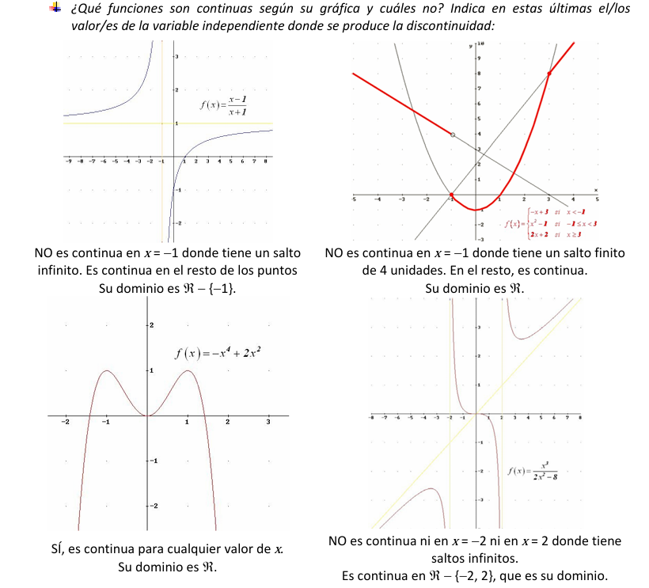
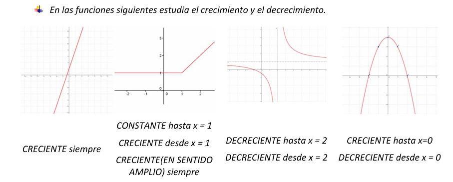
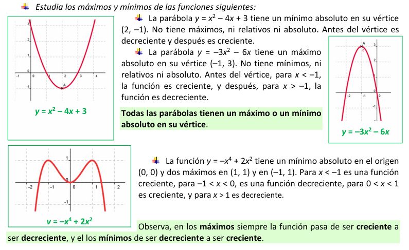
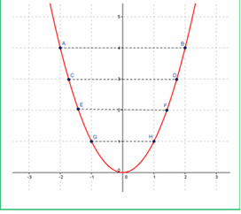
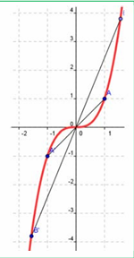
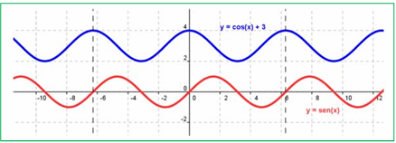

Propiedades gráficas de las funciones.
Una vez que controlamos los conceptos básicos de las funciones y las formas de representación de funciones. Vamos a pasar a analizar las propiedades gráficas características que tienen las funciones.
1. Dominio y recorrido de una función:
- Dominio de una función: el dominio de una función f, es el conjunto de valores que toma la variable independiente. Se representa como: Dom(f) o D(f).
- Imagen o recorrido de una función: La imagen o recorrido de una función f, es el conjunto de valores que toma la variable dependiente. Se representa como: Im(f) o R(f).
Ejemplos:

2. Monotonía y extremos de una función.
Estudiemos los conceptos básicos sobre la monotonía de una función:
- Creciente: Una función f es creciente si a medida que avanzamos sobre el eje X, la función aumenta.
- Decreciente: Una función f es decreciente, si a medida que avanzamos sobre el eje X, la función disminuye.
Veamos ahora lo que se entiende por extremos relativos y absolutos de una función:
- Máximo relativo: una función se dice que alcanza un máximo relativo o local en un punto de abcisas x = a, si "cerca" de el (por la izquierda y por la derecha) f alcanza el máximo valor de la función.
- Mínimo relativo: una función se dice que alcanza un mínimo relativo o local en un punto de abcisas x = a, si "cerca" de el (por la izquierda y por la derecha) f alcanza el menor valor de la función.
- Máximo absoluto: una función alcanza en x = a un máximo absoluto, si toma en dicho valor el mayor de todos los de la función.
- Mínimo absoluto: una función alcanza en x = a un mínimo absoluto, si toma en dicho valor el menor de todos los de la función
Ejemplo:

Ejemplo:

3. Simetría. Periodicidad.
Pasemos a estudiar en este apartado otras dos propiedades gráficas: la simetría y la periodicidad.
- Simetría: Una función f se dice que es:
Par o simétrica respecto del eje Y: Si al doblar la hoja por el eje y, coincide una parte de la gráfica con la otra, es decir, si se cumple:
f(- x) = f(x) para cualquier número x del dominio.
Ejemplo:

Impar o simétrica respecto del origen de coordenadas: Si al doblar la hoja primero por el eje x y después por el eje y coincide una parte con otra, es decir, si se cumple:
f(-x) = - f(x) para cualquier valor x del dominio.
Ejemplo:

- Periodicidad: Una función es periódica, si se va repitiendo indefinidamente y a la longitud del "trozo" que se va repitiendo, se le llama periodo, es decir, si se cumple:
Si existe un número T, llamado periodo que: f(x + T) = f(x) para cualquier valor x del domin
Ejemplo:
